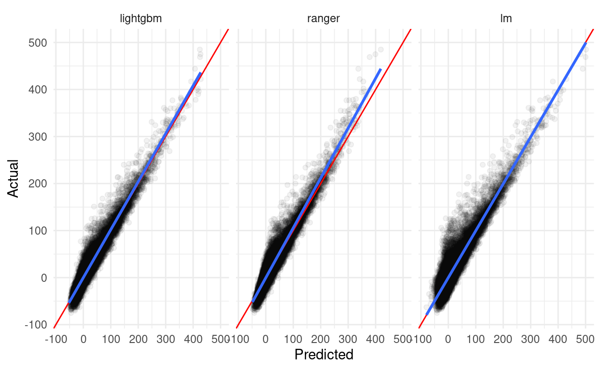
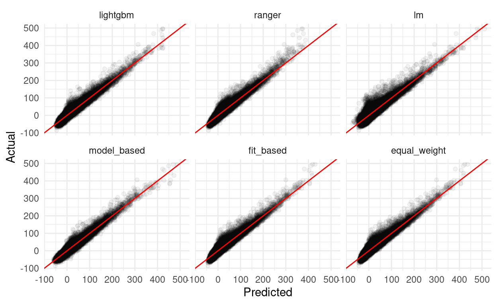

Introduction
Building models is hard. Choosing what models to build can be even harder. With seemingly infinite different modeling approaches to select between (and somehow even more individual implementations), it can be difficult to guess what methods will be the best fit for your data – particularly if you’re working with data that will change over time with new observations or predictors being added to the mix.
Usually, we disclose this sort of uncertainty with things like confidence intervals and standard errors. Yet when it comes to selecting a single model, we often don’t discuss how confident we are in that model being the right one – instead, we present and report only our final choice as if there was no chance other candidate models would be as good or even better fits.
Ensemble models prove a way to deal with that uncertainty (Wintle et al. 2003). By averaging predictions from a handful of candidate models, ensembles acknowledge that there might be multiple models that could be used to describe our data – and by weighting the average we can communicate how confident we are in each individual model’s view of the world. Of course, while this is all nice and flowery, it needs to work too – and model averaging delivers, typically reducing prediction errors beyond even above even the best individual component model (Dormann et al. 2018).
There are a ton of approaches to model averaging1. The rest of this post will walk through a few of the simplest – equal-weight averaging, fit-based averages, and model-based combinations – that you can easily implement yourself without needing to worry about slowing down your iteration time or making your modeling code too complex.
Getting Started
We’ll be using the following libraries for data manipulation and visualization:
Additionally, we’ll be using both ranger and lightgbm to develop component models:
And finally, we need the actual data we’re modeling. For this example, we’ll build models predicting the arrival delay of the flights included in the nycflights13 package using both flight details and weather data. This next chunk of code will preprocess our data into a model-ready format:
flights <- nycflights13::flights
weather <- nycflights13::weather %>%
select(-wind_gust) # About 80% missing values, so we'll drop this column
# combine the two data frames into one complete set
flight_data <- flights %>%
left_join(weather,
by = c("year", "month", "day", "origin", "hour", "time_hour")) %>%
drop_na()
flight_data <- flight_data %>%
# Drop 37 pretty dramatic outliers
filter(arr_delay <= 500) %>%
# Get rid of useless predictors --
# these each cause problems with at least one of our regressions
select(-year, -time_hour, -minute) %>%
# Skip the work of encoding non-numeric values, to save my poor laptop
select_if(is.numeric)
And for one final pre-processing step, we’ll split our data into training, validation, and testing sets (sticking 20% into both validation and testing and dumping the rest into training). We’ll be using model performance against the validation set to determine weights for our averages.
set.seed(123)
# Generate a random sequence to subset our data into train/validate/test splits
row_index <- sample(nrow(flight_data), nrow(flight_data))
# Testing gets the 20% of data with the highest random index values
flight_testing <- flight_data[row_index >= nrow(flight_data) * 0.8, ]
# Validation gets the next highest 20%
flight_validation <- flight_data[row_index >= nrow(flight_data) * 0.6 &
row_index < nrow(flight_data) * 0.8, ]
# Training gets the rest
flight_training <- flight_data[row_index < nrow(flight_data) * 0.6, ]
# LightGBM requires matrices, rather than data frames and formulas:
xtrain <- as.matrix(select(flight_training, -arr_delay))
ytrain <- as.matrix(flight_training[["arr_delay"]])
xvalid <- as.matrix(select(flight_validation, -arr_delay))
xtest <- as.matrix(select(flight_testing, -arr_delay))
So with that out of the way, it’s time to start training our models!
Component Models
Linear Model
Let’s start off with a simple linear regression model, using all of our predictors in the flight dataset to try and estimate arrival delays:
Call:
lm(formula = arr_delay ~ ., data = flight_training)
Residuals:
Min 1Q Median 3Q Max
-58.895 -9.133 -1.538 7.076 159.388
Coefficients:
Estimate Std. Error t value Pr(>|t|)
(Intercept) -4.613e+00 5.992e+00 -0.770 0.441394
month 3.825e-02 1.117e-02 3.424 0.000618 ***
day 2.220e-02 4.109e-03 5.404 6.51e-08 ***
dep_time 9.509e-05 2.795e-04 0.340 0.733722
sched_dep_time -3.492e-03 1.894e-03 -1.844 0.065257 .
dep_delay 1.013e+00 1.068e-03 948.332 < 2e-16 ***
arr_time 8.816e-04 1.182e-04 7.460 8.68e-14 ***
sched_arr_time -4.713e-03 1.478e-04 -31.884 < 2e-16 ***
flight -4.692e-05 2.541e-05 -1.846 0.064863 .
air_time 7.563e-01 3.074e-03 246.006 < 2e-16 ***
distance -9.792e-02 3.925e-04 -249.500 < 2e-16 ***
hour 6.000e-01 1.871e-01 3.207 0.001341 **
temp 1.173e-01 2.232e-02 5.254 1.49e-07 ***
dewp 3.632e-02 2.405e-02 1.510 0.130928
humid 1.860e-02 1.229e-02 1.514 0.130053
wind_dir -6.076e-03 4.009e-04 -15.158 < 2e-16 ***
wind_speed 1.920e-01 7.538e-03 25.471 < 2e-16 ***
precip 2.688e+01 3.014e+00 8.920 < 2e-16 ***
pressure -1.634e-02 5.619e-03 -2.909 0.003631 **
visib -4.603e-01 3.239e-02 -14.212 < 2e-16 ***
---
Signif. codes: 0 '***' 0.001 '**' 0.01 '*' 0.05 '.' 0.1 ' ' 1
Residual standard error: 14.82 on 170687 degrees of freedom
Multiple R-squared: 0.8707, Adjusted R-squared: 0.8707
F-statistic: 6.048e+04 on 19 and 170687 DF, p-value: < 2.2e-16Cool! We have our first model – and it seems to be a pretty ok fit, with an R^2 of 0.87. We could probably make this model better by being a bit more selective with our terms or throwing in some interaction terms – but as a first stab at a model that we’ll incorporate into our average, this is pretty alright.
Of course, we want to make sure this model can generalize outside of the data it was trained with – let’s use it to make predictions against our validation set, too:
[1] 14.73962[1] 0.8684178R^2 remains at about 0.87 and RMSE comes in at about 14.74 minutes – which, considering delays in the validation set range from -75 to 485 minutes, feels not too bad for a naively implemented linear model.
Random Forest
So we have our first model sorted, but we need more than that to take an average! While we could average out a number of linear models with different parameters, it feels more interesting to combine a few different algorithms as component models. So let’s use ranger to implement a random forest to represent our data – fair warning, this one takes a little while to train!
[1] 11.08573[1] 0.9276561So this model has an RMSE of 11.09 and an R^2 of 0.93 – an improvement over our linear model! While we could eke out some improvements with careful tuning, it looks like this version is a good enough fit to use as an example in our ensemble. As before, we want to check out how well this model generalizes by using it to generate predictions for our validation set:
[1] 10.96209[1] 0.9302306Our model actually performs (extremely) slightly better on the validation set!
GBM
So that’s two models sorted! For completeness sake, let’s implement a third and final component model, this time using the LightGBM package to fit a gradient boosting machine. Similar to the last two, we won’t do a ton to parameterize this model – the only change I’ll make to the model fit defaults is to use 100 rounds, to let the boosting algorithm get into the same performance range as our other two models.
lightgbm_model <- lightgbm::lightgbm(xtrain,
ytrain,
nrounds = 100,
obj = "regression",
metric = "rmse",
# Suppress output
force_col_wise = TRUE,
verbose = 0L)
The lightgbm_model doesn’t have the same easy method for evaluating in-bag performance as our linear model and random forests did. We’ll skip right to the validation set instead:
[1] 10.4088[1] 0.9347398So it looks like LightGBM model performs about as well (if not marginally better than) our random forest! For reference, here are the RMSE values from each of our candidate models:
prediction_values <- flight_validation %>%
# Only select our y and y-hat columns
select(ends_with("pred"), matches("arr_delay"))
prediction_plots <- prediction_values %>%
pivot_longer(cols = -arr_delay) %>%
mutate(name = regmatches(name, regexpr(".*(?=_pred)", name, perl = TRUE)),
resid = value - arr_delay,
name = factor(name, levels = c("lightgbm", "ranger", "lm")))
prediction_plots %>%
group_by(Model = name) %>%
summarise(RMSE = sqrt(mean(resid^2)), .groups = "drop") %>%
arrange(RMSE) %>%
knitr::kable()
| Model | RMSE |
|---|---|
| lightgbm | 10.40880 |
| ranger | 10.96209 |
| lm | 14.73962 |
Of course, individual metrics don’t tell the whole story – it can be helpful to look at diagnostic plots of our predictions to try and understand patterns in how our predictions match the data. For instance, “linear models are about four minutes worse on average” is all well and good in the abstract, but graphics like the one below can help us see that – for instance – linear models tend to do a bit worse around 0 minute delays (where most of the data is clustered) while our random forest performs worse on higher extremes:
prediction_plots %>%
ggplot(aes(value, arr_delay)) +
geom_point(alpha = 0.05) +
geom_abline(slope = 1, intercept = 0, color = "red") +
facet_wrap(~ name) +
theme_minimal() +
labs(x = "Predicted",
y = "Actual")

Model Averaging
With our candidate models in tow, we’re now fully ready to move on to model averaging methods! We’ll walk through basic implementations of three methods (equal weighting, fit-based weights, and model-based estimates) and then evaluate our ensembles at the end.
Equal Weights
Perhaps the most obvious way to average models is to take the simple arithmetic mean of your model predictions. This method presupposes that each of your models are equally good representations of your underlying data; since that isn’t the case here, we might expect this method to not substantially reduce error overall.
A benefit of this method, though, is that implementation takes no time at all:
prediction_values <- prediction_values %>%
mutate(equal_weight_pred = (lm_pred + ranger_pred + lightgbm_pred) / 3)
Fit-Based Weights
A slightly more involved method is to weight models based on some metric of their performance. Almost any metric with a standard definition across component models can be used (so for instance, AIC or BIC with nested models or MSE and MAPE); as we’ve been using RMSE so far, we’ll use it to weight our errors.
Weighting models based on fit statistics is also relatively easy in the grand scheme of data science. First, calculate the fit statistic for each of your models:
model_rmse <- vapply(
prediction_values,
function(x) sqrt(mean((x - prediction_values$arr_delay)^2)),
numeric(1)
)[1:3] # Only our 3 component models!
model_rmse
lm_pred ranger_pred lightgbm_pred
14.73962 10.96209 10.40880 Then, depending on your statistic, you may need to take the reciprocal of each value – as lower RMSEs are better, we need to do so here:
rmse_weights <- (1 / (model_rmse))
Lastly, calculate your weights as proportion of the whole set of – you can view these values as the proportion of the ensemble prediction contributed by each component:
rmse_weights <- rmse_weights / sum(rmse_weights)
rmse_weights
lm_pred ranger_pred lightgbm_pred
0.2659099 0.3575422 0.3765479 Making predictions with the ensemble is then relatively easy – just multiply each of your predicted values by their proportion and sum the results:
prediction_values <- prediction_values %>%
mutate(fit_based_pred = ((lm_pred * rmse_weights["lm_pred"]) +
(ranger_pred * rmse_weights["ranger_pred"]) +
(lightgbm_pred * rmse_weights["lightgbm_pred"])))
Model-Based Weights
The last averaging method we’ll walk through is a little more involved, but still pretty comprehensible: take your model outputs, turn around, and use them as model inputs.
Our toy example here is a pretty good fit for this method – we already saw in our graphics that a strong linear relationship exists between our predictions and the true value, and this relationship is a little different for each model:

From this plot, we can guess that a linear model combining our component predictions as features will be a good fit2 for averaging these models. To do so, we simply need to build a linear model:
predictions_model <- lm(arr_delay ~ lm_pred * ranger_pred * lightgbm_pred,
data = prediction_values)
And then use it to generate predictions just like our original component linear model:
prediction_values$model_based_pred <- predict(
predictions_model,
newdata = prediction_values
)
Note that if we saw non-linear relationships between our predictions and true values, we’d want to rely on non-linear methods to average out predictions; it just so happens that our models are already pretty strong fits for the underlying data and can be well-represented with simple linear regression.
How’d We Do?
Now that we have our ensemble models prepared, it’s time to evaluate all of our models out against our testing set!
The first step is to generate predictions for the test set using our component models:
We can use those predictions to generate our ensemble predictions. Note that we’re still using the weights and models calibrated on the validation data – we (theoretically) shouldn’t know the “true” values for the test set, so we can’t re-weight our averages now!
flight_testing <- flight_testing %>%
mutate(equal_weight_pred = (lm_pred + ranger_pred + lightgbm_pred) / 3)
flight_testing <- flight_testing %>%
mutate(fit_based_pred = ((lm_pred * rmse_weights["lm_pred"]) +
(ranger_pred * rmse_weights["ranger_pred"]) +
(lightgbm_pred * rmse_weights["lightgbm_pred"])))
flight_testing$model_based_pred <- predict(
predictions_model,
newdata = flight_testing
)
So how’d we do? Let’s check out the RMSE for each of our models:
prediction_values <- flight_testing %>%
select(ends_with("pred"), matches("arr_delay"))
prediction_plots <- prediction_values %>%
pivot_longer(cols = -arr_delay) %>%
mutate(name = regmatches(name, regexpr(".*(?=_pred)", name, perl = TRUE)),
resid = value - arr_delay,
name = factor(name,
levels = c("lightgbm", "ranger", "lm",
"model_based", "fit_based", "equal_weight")))
prediction_plots %>%
group_by(Model = name) %>%
summarise(RMSE = sqrt(mean(resid^2)), .groups = "drop") %>%
arrange(RMSE) %>%
knitr::kable()
| Model | RMSE |
|---|---|
| model_based | 9.492409 |
| lightgbm | 10.290113 |
| ranger | 10.968544 |
| fit_based | 11.057728 |
| equal_weight | 11.311836 |
| lm | 14.621943 |
prediction_plots %>%
ggplot(aes(value, arr_delay)) +
geom_point(alpha = 0.05) +
geom_abline(slope = 1, intercept = 0, color = "red") +
facet_wrap(~ name) +
theme_minimal() +
labs(x = "Predicted",
y = "Actual")

Cool – our model-based ensemble actually performed better than any of the components! While the equal weight and fit-based averages were pretty middle-of-the-road, in other settings these methods can also help to reduce bias in predictions and produce estimates with less variance than any of the component models.
Conclusion
Model averaging can be a powerful tool for reducing model bias and addressing the implicit uncertainty in attempting to pick the “best” model for a situation. While plenty of complex and computationally expensive approaches to averaging exist – and can greatly improve model performance – simpler ensemble methods can provide the same benefits without necessarily incurring the same costs.